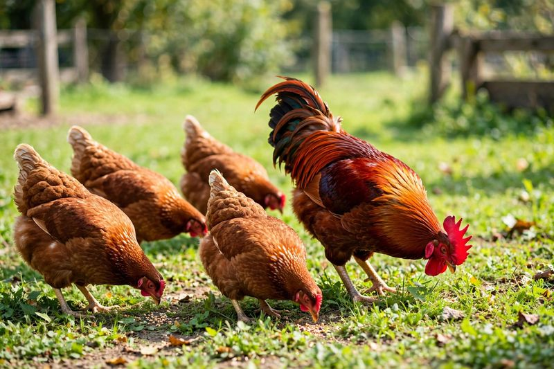
📚 Free Poultry Guide Booklets (PDF)
Modern pictorial booklets with real photos — clinical signs, post-mortem lesions, treatment and prevention. Free to view and download; also available in the Veterinary Library under the Poultry topic.
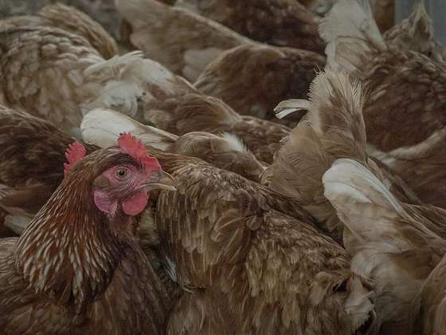
Newcastle Disease (Ranikhet)Signs, post-mortem lesions, prevention and vaccination.
📖 View / Download PDF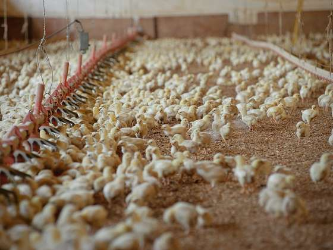
Gumboro Disease (IBD)The immune-system disease of young chickens — signs, lesions and control.
📖 View / Download PDF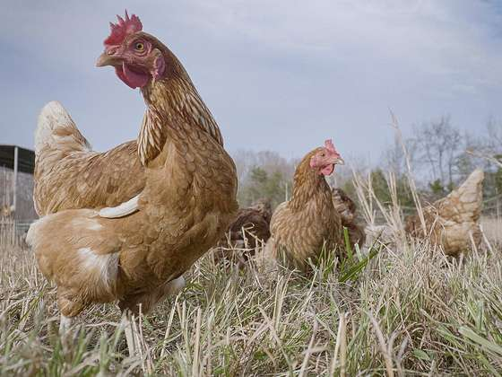
Avian Influenza (Bird Flu)Signs, lesions, biosecurity and why outbreaks must be reported fast.
📖 View / Download PDF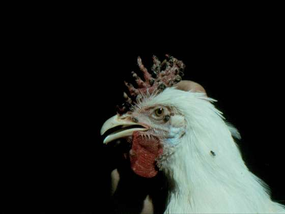
Fowl PoxComb and skin lumps, mouth lesions, mosquito control and vaccine.
📖 View / Download PDF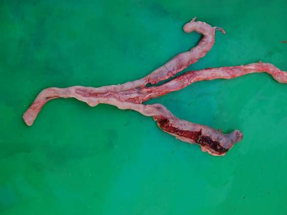
CoccidiosisBloody droppings and gut lesions — litter, water and medicine control.
📖 View / Download PDF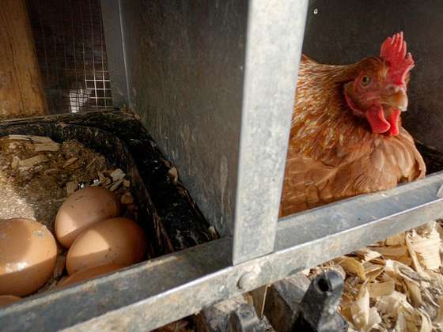
Infectious Bronchitis (IB)Breathing signs, egg drop and kidney lesions — and the vaccine plan.
📖 View / Download PDF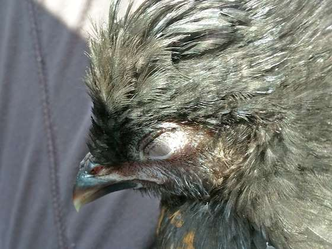
CRD — MycoplasmaChronic respiratory disease: signs, air-sac lesions and flock control.
📖 View / Download PDF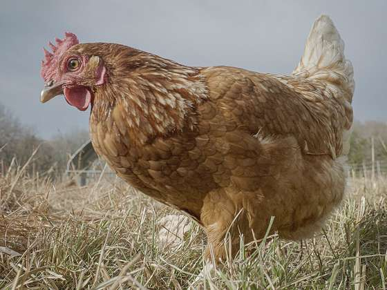
Marek's DiseaseParalysis and tumours — nerve and eye lesions, hatchery vaccination.
📖 View / Download PDF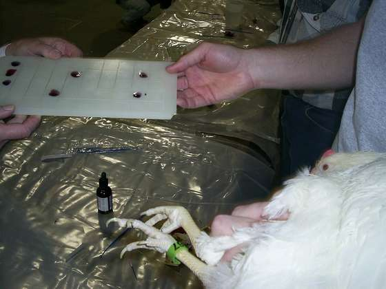
SalmonellosisPullorum and fowl typhoid — chick deaths, lesions and flock testing.
📖 View / Download PDF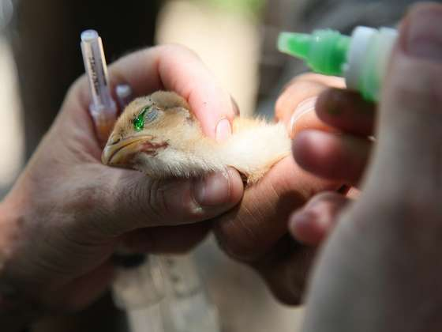
Poultry Vaccination ScheduleThe complete broiler + layer vaccine calendar in one booklet.
📖 View / Download PDF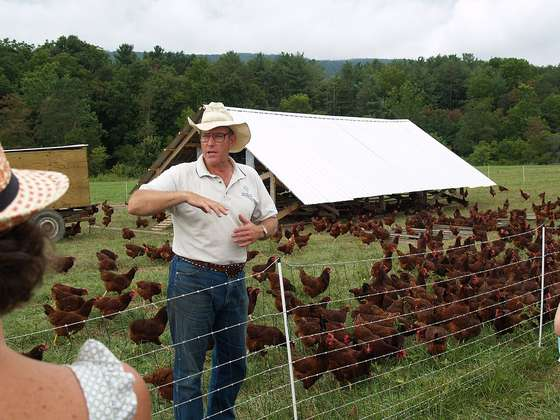
Layer Farming & Egg Production37-page pictorial guide — best laying breeds, lighting, feeding and the egg production curve.
📖 View / Download PDF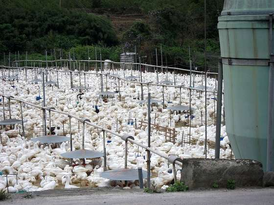
Broiler Poultry Farming36-page pictorial guide — day-old chick to market in 42 days, growth chart, FCR and disease care.
📖 View / Download PDF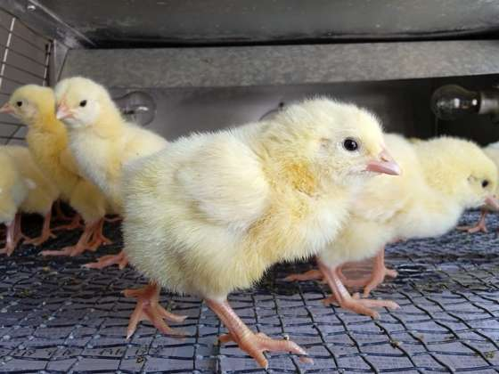
Brooding & Chick Management36-page pictorial guide — brooder setup, temperature chart, first 48 hours and chick diseases.
📖 View / Download PDF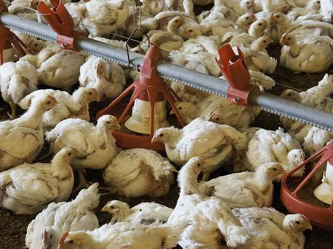
Poultry Feed Formulation37-page pictorial guide — ingredients, 100 kg sample formulas for broiler & layer, mixing and FCR.
📖 View / Download PDF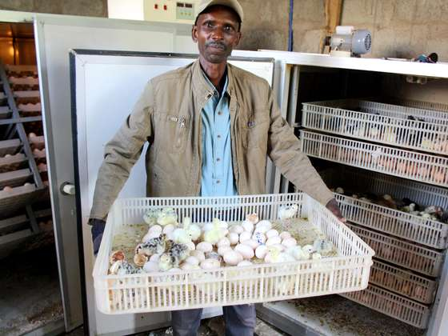
Breeding & Hatchery Management37-page pictorial guide — hatching eggs, 21-day incubation chart, candling and chick grading.
📖 View / Download PDF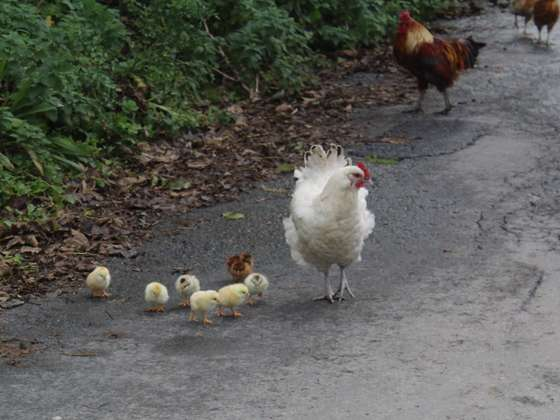
Backyard Poultry Farming36-page pictorial guide — desi hens, natural hatching, low-cost feeding and disease care.
📖 View / Download PDF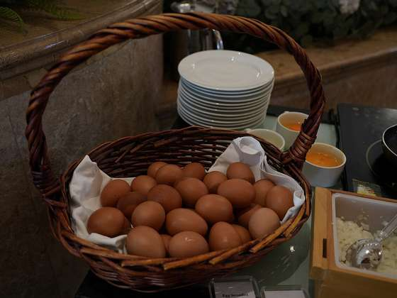
Egg Quality & Defects36-page pictorial guide — shell problems, candling, causes and fixes for every defect.
📖 View / Download PDF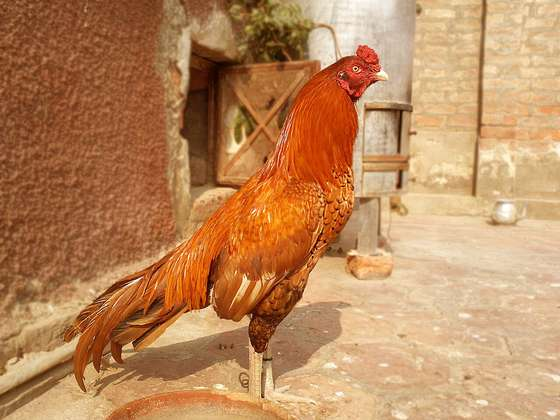
Indigenous Chicken Breeds of Asia35-page pictorial guide — Aseel, Kadaknath, Desi, Sonali and more hardy native breeds.
📖 View / Download PDF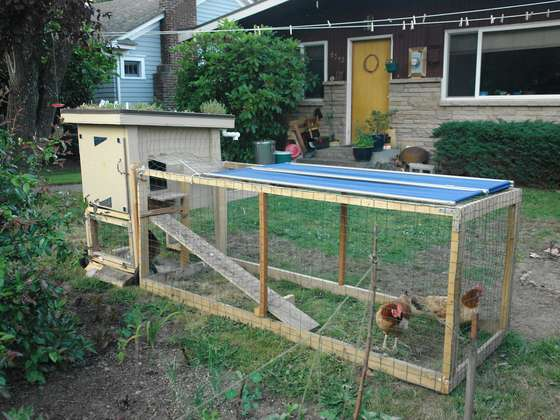
Chicken Coop & Housing Designs35-page pictorial guide — floor plans for 10, 50 & 200 hens, ventilation and predator proofing.
📖 View / Download PDF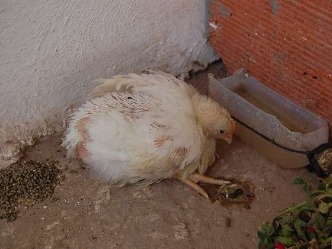
Newcastle Disease — Complete Guide42-page complete guide — signs with real photos, post-mortem lesions, treatment truth and the full vaccination schedule.
📖 View / Download PDF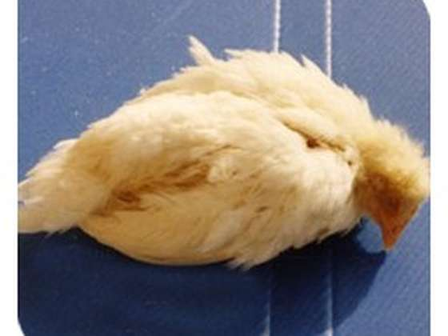
Gumboro (IBD) — Complete Guide35-page complete guide — signs, bursa lesions, immunosuppression, modern vaccines and prevention.
📖 View / Download PDF34-page complete guide — signs, post-mortem lesions, the no-cure truth and HVT / Rispens / in-ovo vaccination.
📖 View / Download PDF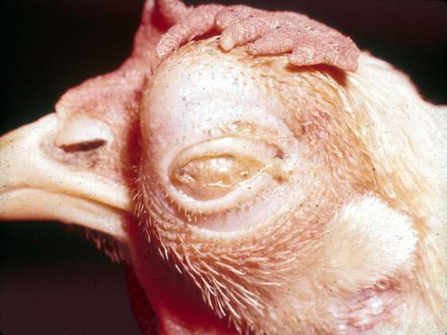
Infectious Coryza — Complete Guide32-page complete guide — swollen face, clinical signs, sinus lesions, treatment and prevention.
📖 View / Download PDF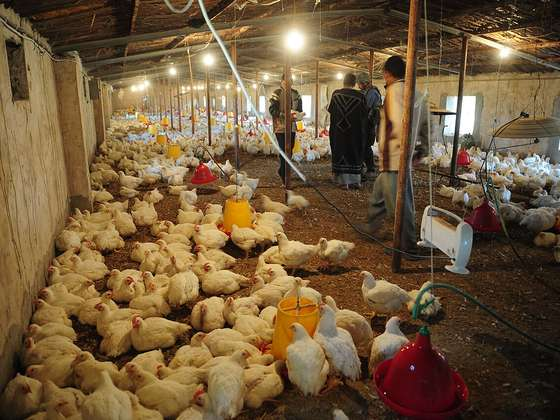
Hydropericardium Syndrome (HPS)34-page complete guide — Angara disease: sudden deaths, the litchi-heart lesion, treatment and vaccination.
📖 View / Download PDF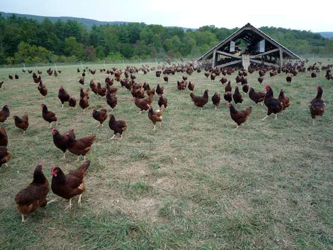
Fowl Cholera — Complete Guide34-page complete guide — signs, post-mortem lesions, treatment and prevention of avian pasteurellosis.
📖 View / Download PDF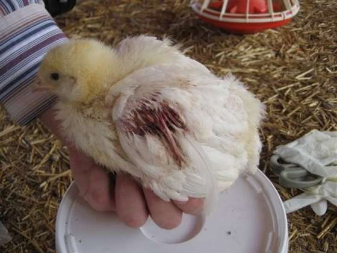
Chicken Infectious Anemia (CIA)32-page complete guide — blue wing disease: signs, lesions, diagnosis and breeder vaccination.
📖 View / Download PDF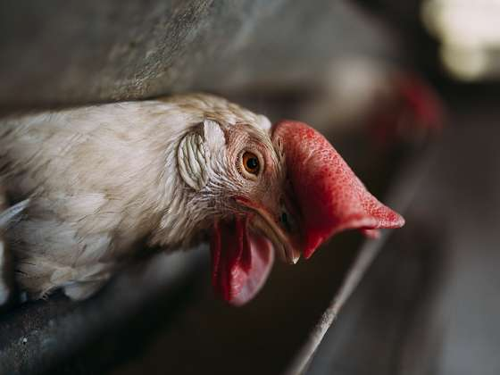
Poultry Diseases Handbook — 16 Diseases55-page handbook — signs, post-mortem lesions, treatment & prevention for 16 poultry diseases in one book.
📖 View / Download PDF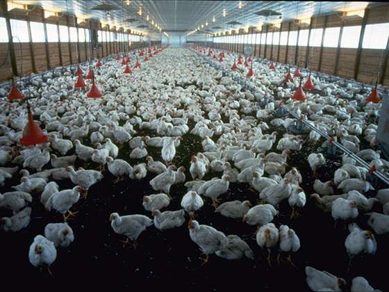
Vaccination Schedule — Complete Guide40-page complete guide — broiler, layer, breeder & desi schedules, every route, cold chain and in-ovo vaccination.
📖 View / Download PDF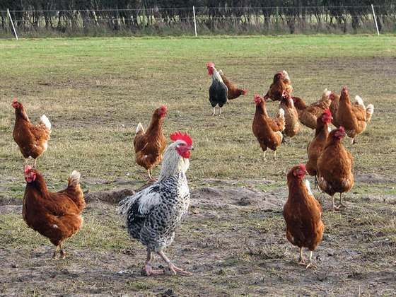
Organic Poultry Nutrition & Feeding36-page complete guide — organic rules, nutrient requirements, ingredients and 100 kg sample rations.
📖 View / Download PDF44-page practical manual — housing, brooding, feeding, lighting, health and profit for broiler & layer farms.
📖 View / Download PDF42-page complete guide — broiler growth chart, layer production curve, FCR & PEF targets, records and profit.
📖 View / Download PDF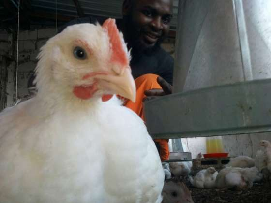
Hubbard Broiler Management43-page complete guide — day-old chick to market: feeding, brooding, vaccination and 2023 growth targets.
📖 View / Download PDFBroiler vs Layer Management Basics
Broilers are chickens raised for meat. They grow very fast and are usually ready for market within a few weeks. Broiler management focuses on rapid, even growth: high-energy feed, constant access to clean water, warm brooding for chicks, and careful control of stocking density so every bird can reach feed and water.
Layers are chickens kept for egg production. They are raised for many months, so layer management focuses on steady, long-term health: controlled lighting programmes to stimulate laying, calcium-rich feed for strong eggshells, and clean, quiet nesting areas. Layers need careful handling to avoid stress, which quickly drops egg production.
Both systems need the same foundations: healthy day-old chicks from a reliable hatchery, good brooding, clean water at all times, and a vaccination programme matched to the local disease risk.
Housing, Ventilation & Litter
A good poultry house protects birds from heat, cold, rain and predators, and keeps the air fresh. In Pakistan's hot summers, shade, fans and evaporative cooling matter as much as the walls themselves; in winter, birds need protection from cold draughts while still getting fresh air.
Ventilation removes ammonia, moisture and dust from the house. Poor ventilation causes breathing problems, eye irritation and slow growth. Open-sided houses with adjustable curtains work well in most of Pakistan; controlled-environment houses use fans and cooling pads for larger flocks.
Litter — usually rice husk or wood shavings — should be dry, soft and deep enough to absorb droppings. Wet, caked litter breeds disease and causes foot problems. Stir the litter regularly, replace wet patches, and keep drinkers from leaking onto it.
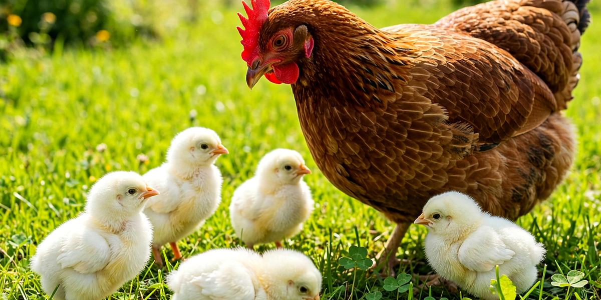
Feeding Basics
Poultry feed must match the bird's age and purpose: starter feed for chicks, grower feed for young birds, finisher feed for broilers, and layer feed for laying hens. Each stage has different protein, energy and calcium needs.
Feed should be fresh, dry and free of mould — mouldy feed can carry toxins that damage the liver and weaken immunity. Store feed off the floor in a dry, covered place, and never feed leftovers that have gone damp or stale.
Clean drinking water is just as important as feed: birds drink roughly twice as much water as the feed they eat, and even a short water shortage cuts growth and egg laying. Clean drinkers daily and check the water supply in hot weather.
Common Poultry Diseases
Newcastle Disease (Ranikhet)
A highly contagious viral disease. Signs include sudden deaths, gasping and sneezing, greenish diarrhoea, twisted necks and a sharp drop in egg production. There is no treatment for the virus itself — prevention is by regular vaccination and strict biosecurity.
Gumboro Disease (Infectious Bursal Disease, IBD)
A viral disease that attacks the immune system of young chickens, usually between three and six weeks of age. Signs include dullness, ruffled feathers, whitish diarrhoea and sudden deaths. Vaccination of chicks at the right age, guided by local advice, is the main protection.
Marek's Disease
A viral disease that causes tumours and paralysis, often in one leg or wing, and can cause blindness. It spreads through feather dust and survives for a long time in poultry houses. Day-old chicks are vaccinated at the hatchery, and good hygiene between flocks reduces the virus load.
Fowl Pox
A slow-spreading viral disease that causes wart-like lumps on the comb, wattles and around the eyes, and sometimes yellow patches inside the mouth. Mosquitoes and biting insects spread it. Vaccination and mosquito control prevent most outbreaks.
Coccidiosis
A parasitic disease of the gut, common in young birds on damp litter. Signs include bloody droppings, dullness, poor growth and deaths. Prevention is based on dry litter, clean drinkers, anticoccidial feed additives or vaccination, as advised by a poultry veterinarian.
Fowl Cholera
A bacterial disease that can kill birds suddenly, often with few warning signs; surviving birds may show swollen wattles, breathing difficulty and greenish diarrhoea. It spreads through contaminated water, feed and wild birds. Prevention means good sanitation, rodent control and vaccination where the disease is a known risk.
Poultry Vaccination Basics
Vaccination is the backbone of poultry disease prevention. Common vaccines cover Newcastle disease, Gumboro (IBD), Marek's disease, fowl pox and infectious bronchitis, given by eye drop, drinking water, spray or injection depending on the vaccine.
Follow the vaccination schedule recommended by your poultry veterinarian or hatchery — the right vaccine at the wrong age may not protect the flock. Keep vaccines cold until use, use them the same day once opened, and never mix vaccines unless your veterinarian advises it. For general vaccine handling principles, see our Vaccination & Prevention guide.
Biosecurity on the Poultry Farm
- Keep an all-in, all-out system where possible: bring in one batch of chicks, raise them together, then clean and rest the house before the next batch.
- Limit visitors and vehicles; use footbaths and clean footwear at the house entrance.
- Keep wild birds and rodents out of poultry houses — they carry disease.
- Isolate sick birds immediately and dispose of dead birds safely, away from the flock.
- Clean and disinfect the house, drinkers and feeders thoroughly between flocks.
- Do not mix birds of different ages or from different sources in one house.
Related Guides
Vaccination & Prevention · Nutrition & Feeding · Farm Management · Cattle Diseases · Goat Diseases · Veterinary Library
⚠️ Important: Disease signs overlap between poultry diseases, so a correct diagnosis needs laboratory testing. Contact a poultry veterinarian quickly when deaths or a drop in production appear — early action saves the flock.
✍️ Written by Dr. Shahid Bilal Depal, DVM (PVMC RVMP #15068)
This guide is for educational purposes. Consult a registered veterinarian for diagnosis and treatment.